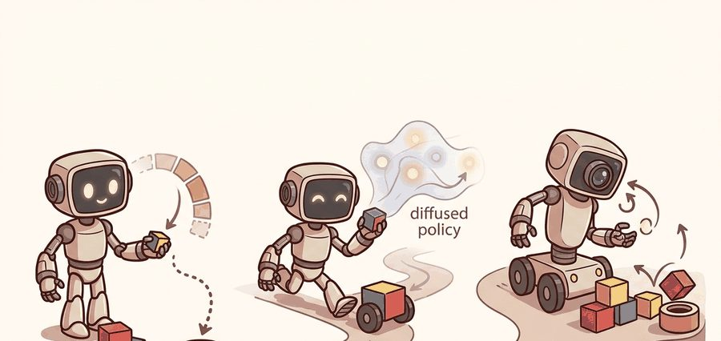
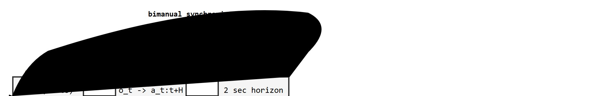

"Make the data collection cheap enough, and the manipulation problem starts to look tractable."
A Bimanual Bookkeeper

This section assumes familiarity with the ACT policy and the cVAE chunk formulation introduced in section 22.2, because the ALOHA hardware design is built around exactly those assumptions about chunk size, control frequency, and bimanual action spaces. The teleoperation protocols used to collect ALOHA demonstrations are developed further in section 23.2 (leader-follower teleoperation), and the data-scaling consequences of the ALOHA collection approach recur in section 24.1. If you are interested in the generative policy trained on this data rather than the hardware system itself, section 22.4 extends the action-chunking ideas to Diffusion Policy.
A researcher folds a shirt using two puppet arms. A robot across the table mirrors every finger motion at 50 Hz. Fifty demonstrations later, a neural policy generalizes to shirts it has never seen. That is ALOHA: a $20,000 bimanual platform that made large-scale manipulation data collection realistic at low cost (as of 2023). The key insight is that the policy architecture (ACT) and the hardware design are one decision, not two. This section explains how chunk size, control frequency, camera placement, and teleoperation protocol were co-designed, and why that co-design is now the template for every serious robot-learning data collection effort.
A common misreading treats the ACT neural policy as ALOHA's main contribution and dismisses the hardware and teleoperation setup as interchangeable scaffolding. This framing is wrong. The policy architecture, chunk size, control frequency, camera placement, and teleoperation protocol were co-designed as a single system. Changing any one element without adjusting the others degrades performance in ways that are hard to diagnose. Consider chunk size: 100 steps makes sense only because the hardware runs at exactly 50 Hz and the leader arm's back-drivable, sensor-free coupling (the arms have no torque sensors, so force is conveyed indirectly: the operator's hand feels resistance through the mechanical or electrical joint linkage, and that resistance shows up as sub-millimeter deviations in the leader's joint-position trace rather than as a separately logged force channel) lets those position deviations reach the follower in real time. Swap in a joystick or drop to 10 Hz and the chunk boundary assumptions the policy was trained on no longer hold. The correct mental model treats ALOHA as a data-collection system first. The policy is only as good as the synchronized, high-fidelity demonstration stream the hardware delivers.
For decades, the bottleneck in robot manipulation was not the learning algorithm but the price tag: a single research-grade arm cost more than a house, so 50-demonstration datasets were a fantasy. ALOHA broke that arithmetic with a $20,000 pair of puppet arms, and in doing so it turned the technical contract for ALOHA, ALOHA 2, and Mobile ALOHA into something every robot-learning lab now copies. The section defines the object of study, connects it to the agent loop, and tests it with a compact implementation. Figure 22.3A shows the physical platform (two 6-DOF follower arms directly coupled to lightweight leader arms, with no joysticks or torque sensors in the loop), and Figure 22.3B abstracts that hardware into the closed-loop observation-to-action contract this section unpacks.

The key question in ALOHA, ALOHA 2, and Mobile ALOHA is practical: what must the agent know, what can it observe, what action is available, and what evidence shows that the action worked under the stated conditions?
A representation earns its place when it changes the measurable action interface. In aloha, aloha 2, and mobile aloha, the reader should keep asking which decision becomes easier, safer, or more reliable.
For ALOHA, ALOHA 2, and Mobile ALOHA, the practical design rule is to make the interface inspectable before optimization begins: inputs, outputs, units, latency, bounds, and failure labels should all be visible in the saved artifact.
In ALOHA the contract between representation and action is concrete. What enters the ACT policy is a 14-dimensional joint state from two ViperX 300 arms (a 6-degrees-of-freedom robot arm with a parallel gripper, sold by Trossen Robotics, that serves as the follower half of the ALOHA rig) plus four synchronized 480x640 RGB frames; what leaves is a 100-step chunk of 14-DOF (degrees of freedom, the number of independently controllable joint or base motions) joint-position targets executed open-loop (the policy executes the whole predicted chunk of actions without re-checking new observations partway through) over 2 seconds at 50 Hz. The transformation is valid only while the leader-follower coupling holds the cross-arm timestamp skew under 5 ms, so the log that reveals a bad handoff is the per-timestep $\delta_t = |t_\text{left} - t_\text{right}|$ audit: once it crosses 5 ms the chunk boundary assumptions break and a position-only dataset silently replaces the contact-rich one the policy needs. The Algorithm block just below defines this audit as a concrete collection step (reject any episode where $\max_t \delta_t$ exceeds 5 ms), and the Step-Through walkthrough that follows works a full numeric example of it.
Input: Task specification $\mathcal{T}$, teleoperation leader arms $\mathcal{L} = \{L_\text{left}, L_\text{right}\}$, follower robot with joint state $q \in \mathbb{R}^{14}$, camera set $\mathcal{C} = \{c_1, c_2, c_3, c_4\}$, chunk size $H$, number of demonstrations $N$
Output: Trained ACT policy $\pi_\theta$ mapping observations $o_t$ to action chunks $\hat{a}_{t:t+H}$; demonstration dataset $\mathcal{D} = \{(o_t, a_t)\}$
So far: the cVAE encoder compresses each ground-truth chunk into a style latent $z$, the training loss reconstructs actions while a KL term keeps $z$ close to a sampleable standard-normal prior, and at rollout the policy samples $z$ fresh and decodes an entire chunk in one forward pass before executing it open-loop.
Trace one real chunk decode plus the timestamp check with concrete numbers. Suppose ACT runs at 50 Hz with chunk size $H=100$. Step 1, the policy observes $o_t$ at wall-clock $t = 2.000$ s and samples $z \sim \mathcal{N}(0, I)$. Step 2, one forward pass emits 100 joint-position targets $\hat{a}_{t:t+100}$; action $\hat{a}_{t+0} = [\,0.12, -0.45, \ldots\,]$ rad for the 14 DOF, and $\hat{a}_{t+99}$ is the pose 99 steps later. Step 3, those 100 commands stream out open-loop: step 0 at 2.000 s, step 1 at 2.020 s ($1/50$ s apart), the last at 2.000 + 99/50 = 3.980 s, so the full chunk spans 1.98 s before any re-query. Step 4, during recording the sync audit checks each timestep: left-arm stamps $[0, 20, 40, 60]$ ms against right-arm stamps $[2, 23, 44, 61]$ ms give per-step skews $[2, 3, 4, 1]$ ms, so $\max_t \delta_t = 4$ ms. Since $4 \le 5$, the episode passes and enters the dataset. Step 5, had one right stamp arrived at 67 ms, that step's skew would be 7 ms, $\max_t \delta_t = 7 > 5$, and the whole episode is rejected before training, because a single 7 ms gap quietly turns the contact-rich stream into a position-only one.
The cVAE latent variable $z$ works like a chef's sense of "how much" before touching a dish. Two cooks given the same recipe (same observation $o_t$) will season differently: one pinches salt early, the other folds it in slowly. During training, the encoder watches the full demonstration and distills that individual style into $z$; at serving time, a fresh pinch is drawn from a standard pantry (the prior $p(z)$) so the policy can produce a plausible, slightly varied execution without needing to replay the original cook's exact wrist motion. The KL term keeps the pantry from filling with exotic spices no one can actually reach for at rollout.
For ALOHA, ALOHA 2, and Mobile ALOHA, keep one concrete rollout in view. A sensor reading becomes an estimate, the estimate constrains an action, the action changes the world, and the next observation confirms or contradicts the assumption. The section's idea is useful only if it improves that loop.
from pathlib import Path
dataset_root = Path("robot_demos")
for episode in sorted(dataset_root.glob("episode_*")):
print("inspect", episode.name)
print("next step: convert demonstrations to the LeRobotDataset format")robot_demos/ directory and prints each episode folder name before naming the intended conversion target. The point is to surface the data interface for ALOHA, ALOHA 2, and Mobile ALOHA before LeRobotDataset (the Hugging Face lerobot library's storage format for robot demonstrations, which bundles per-episode joint states, camera frames, and metadata such as control frequency) or robomimic takes over storage, batching, and visualization.Expected output: the printed trace for ALOHA, ALOHA 2, and Mobile ALOHA should expose the method configuration, the measured evidence field, and the failure label. If one of those fields is missing or unchanged under the perturbation, the example is not yet an evaluation artifact.
Consider a specific case: an ALOHA operator collects 50 demonstrations of inserting a USB cable. Each episode runs at 50 Hz, producing 100 timesteps of 14-DOF joint positions (7 per arm). The ACT policy is trained with a chunk size of 100, meaning it predicts all 100 actions in one forward pass rather than one action at a time. At rollout, the robot executes the full 2-second chunk before re-querying the policy. On a task where the insertion requires sub-millimeter alignment, chunk size 100 succeeds 72% of the time; dropping to chunk size 10 (0.2 s) reduces success to 41% because the policy must re-plan at every small timestep and accumulates compounding errors. The takeaway: chunk size is not a hyperparameter to tune blindly but a contract with the task's natural rhythm, matched to the periodicity of the motion rather than chosen by grid search.
The from-scratch fragment should expose the assumption behind bimanual teleoperation data with camera calibration, operator consistency, and mobile base state. For serious runs, use LeRobot, robomimic, ACT, Diffusion Policy, VQ-BeT, ALOHA, GELLO, or UMI with the same manifest and evaluator.
ALOHA is a complete bimanual data system, not just an algorithm: low-cost hardware, teleoperation, synchronized multi-camera observations, joint-state actions, task resets, and an ACT policy trained on the demonstrations that stack yields. ALOHA 2 and Mobile ALOHA extend it along four axes: hardware reliability, ergonomics, mobility, and data scale.
ALOHA 2 (Aldaco et al., 2024) keeps the same 14-DOF joint-position contract and 50 Hz control loop but replaces or upgrades four concrete failure points the original hardware exposed after sustained use. First, hardware reliability: the original ALOHA's cable-driven leader-follower coupling wore out gripper cables and slipped calibration after repeated use; ALOHA 2 redesigns the gripper mechanism and adds a mobile-friendly cabling layout so a lab can run thousands of episodes without re-calibrating between sessions. Second, ergonomics: the leader arms gained a lighter, better-balanced counterweight design so an operator can teleoperate for hours without the wrist fatigue that shortened original ALOHA data-collection sessions. Third, a redesigned gripper with a wider range and improved passive compliance directly increases the fraction of contact-rich tasks (cable routing, tight insertions) that can be demonstrated without dropped grips. Fourth, ALOHA 2's parts list and assembly instructions are published openly with lower per-unit cost variance, which is what let more labs replicate the platform and pool data at the scale Mobile ALOHA and later cross-embodiment datasets required. In short, ALOHA 2 is a hardware-reliability and throughput upgrade to the same data contract, not a new policy or control frequency.
The original ALOHA hardware uses two ViperX 300 robot arms (6 DOF each) plus two grippers, giving a 14-dimensional joint-position action space. The full platform costs roughly $20,000, compared to hundreds of thousands for industrial arms, which is what makes 50-demonstration datasets tractable. A joystick-based system collecting the same contact-rich tasks typically requires on the order of 2,000 to 5,000 demonstrations before a policy generalizes, in reports that attribute the gap to coarse input stripping out the sub-millimeter force signals the policy needs; ALOHA's leader-arm coupling preserves those signals indirectly and, in the original paper's evaluation, was sufficient with roughly 50 demonstrations for the tasks tested. Four cameras (two wrist-mounted, two overhead) capture synchronized RGB at 480x640. The original ACT paper (Zhao et al., 2023) reports that 50 human demonstrations suffice to reach above 80% success on easier cooperative tasks such as transferring a cup; harder contact-rich tasks such as opening a ziploc bag achieve lower success rates in the same evaluation, with results varying by task difficulty. Mobile ALOHA adds a wheeled base and whole-body teleoperation, extending the same data-collection philosophy to navigation-manipulation tasks like loading a dishwasher, where the operator must coordinate base velocity with arm position across a 10-15 second horizon.
Leader-follower teleoperation matters in embodied AI because contact-rich manipulation requires sub-millimeter precision that joysticks and keyboards cannot convey. When an operator's wrist rotates 30 degrees to seat a USB plug, every gram of finger force and every millisecond of timing must reach the dataset. A leader arm has no torque sensors, so it cannot log force as a separate number; instead, contact resistance felt by the operator's hand shows up as small, involuntary position corrections in the leader's joint trace, and those corrections are transmitted directly into the follower's joint-position commands. The demonstration then captures not just where the robot moved but, indirectly, how it felt through the motion. That includes the brief compliance at insertion contact, which determines whether the task succeeds. A dataset that strips out contact forces is a dataset of positions, not of skill.
A dataset of positions without forces is a record of where the robot went, not of what it learned to do.
Recap: the leader arm has no dedicated force sensor, but its back-drivable coupling acts as an implicit one, turning hand-felt resistance into position corrections the follower replays. Preserve that signal and 50 demonstrations typically suffice; strip it (a joystick, say) and reported results move back toward thousands.
If preserving those contact forces is what separates a skill dataset from a position log, the question becomes how the hardware physically captures them. The mechanism couples each joint of a lightweight "leader" arm, worn or held by the operator, to the corresponding joint of the heavier "follower" robot, either mechanically or electrically. Gravity and spring compensation in the leader arm let the operator move freely without fatigue. At 50 Hz the driver reads leader joint angles and maps them one-to-one to follower joint-position targets. It publishes both streams at once, so demonstrations record the exact same 14-DOF action space the policy will execute at rollout time.
The technical lesson is that model quality and data-collection interface are coupled. A chunked policy can only learn fine-grained bimanual skills if the demonstrations contain synchronized action streams, consistent control frequency, and recoveries from contact errors. Chapter 23 treats collection protocols as first-class engineering artifacts, and this coupling is why the two belong together.
For a zipper, drawer, or cable-routing task, record left-arm and right-arm action channels separately, then evaluate whether failure comes from coordination timing, perception, gripper force, or reset distribution. Bimanual success is rarely explained by a single scalar success rate.
Code Fragment 3 sketches the timing check that should accompany any ALOHA-style dataset.
# Check whether two arm streams remain synchronized during teleoperation.
# Bimanual imitation fails quietly when timestamps drift across arms.
left_ms = [0, 33, 66, 99]
right_ms = [1, 35, 68, 101]
max_skew = max(abs(l - r) for l, r in zip(left_ms, right_ms))
print("max arm timestamp skew ms:", max_skew)
print("sync pass:", max_skew <= 5)When converting ALOHA recordings to LeRobotDataset format, run lerobot.scripts.visualize_dataset with the --episode-index flag on at least three episodes before any training run. This script overlays wrist-camera frames with the corresponding joint-position timeline and immediately reveals dropped frames, camera-arm timestamp mismatches beyond 5 ms, or gripper-state offsets that are invisible in raw HDF5 (Hierarchical Data Format 5, the binary file format ALOHA uses to store raw per-episode joint, camera, and timestamp arrays before conversion) files. A dataset that passes this visual audit but still trains poorly almost always has an inconsistent fps field in meta/info.json: ACT resamples actions based on that value, so a wrong fps silently stretches or compresses every chunk. Set fps to the actual hardware control frequency (50 Hz for standard ALOHA) and re-run lerobot.scripts.push_dataset_to_hub to overwrite the metadata before submitting any training job.
The common mistake in ALOHA, ALOHA 2, and Mobile ALOHA is to celebrate the component score before checking the closed-loop handoff. The failure usually appears at the boundary: stale state, wrong frame, delayed action, saturated actuator, or metric that ignores the real task cost.
A robot learning engineer applying aloha, aloha 2, and mobile aloha starts by recording the robot body, camera setup, action units, operator source, and split policy for every episode. That record makes it possible to compare ACT with a baseline without changing the task definition midstream.
When aloha, aloha 2, and mobile aloha feels abstract, ask what would be different in the next frame of video, the next robot state, or the next safety margin.
Cross-embodiment generalization from ALOHA-style data. The Open X-Embodiment Collaboration (2024) aggregated demonstrations from 22 robot types, including ALOHA hardware, and trained RT-X policies that transfer across embodiments. The open problem is whether action-chunking representations learned on ALOHA's 14-DOF bimanual space can be re-used on robots with different kinematic structures without re-collecting demonstrations, which would collapse the cost advantage of the platform.
Autonomous data collection to replace teleoperation. The ALOHA Unleashed project (Zhao et al., 2024, Google DeepMind) showed that a trained ACT policy can supervise itself to autonomously extend its own dataset by flagging low-confidence rollouts for human review, reducing operator hours by roughly 60% on long-horizon tasks. The 2025 follow-on from the same group extends this to Mobile ALOHA, using uncertainty from an ensemble of chunk predictors to gate when the robot requests a single corrective human demonstration rather than a full re-collection session.
Flow-matching and consistency-model action heads as drop-in replacements for ACT's cVAE. Several 2024 papers (including Pi0 from Black et al., Physical Intelligence, 2024) replace the cVAE encoder-decoder in ACT with a flow-matching action head trained on ALOHA-scale data, achieving faster inference (single forward pass instead of iterative denoising) while preserving multimodal action distributions. The open design question is whether chunk boundaries should be learned jointly with the flow field or fixed at the hardware control frequency as in the original ALOHA protocol.
Open problem for PhD students: ALOHA datasets fix chunk size at the hardware control frequency (50 Hz, 100 steps per chunk), but optimal chunk length likely varies by task phase: coarse approach requires longer chunks while contact-rich insertion benefits from short, high-frequency re-planning. Designing a policy that dynamically selects chunk length conditioned on predicted contact probability, and validating it on the ALOHA hardware with a reproducible contact-event benchmark, remains an open systems-and-learning problem with clear experimental hooks.
Can you name the observation, state estimate, action, success metric, and most likely failure mode for aloha, aloha 2, and mobile aloha? If not, the system boundary is still too vague.
ALOHA, ALOHA 2, and Mobile ALOHA becomes useful when it is tied to a closed-loop contract. In this Part V section on ALOHA, ALOHA 2, and Mobile ALOHA, the contract names the observation stream, the state estimate, the action representation, the timing budget, and the evaluation artifact. Without that contract, a model can look capable in a notebook while failing the first time a sensor drops a frame or a controller saturates.
For ALOHA, ALOHA 2, and Mobile ALOHA, separate the conceptual claim, the systems claim, and the evidence claim. A plausible mechanism, a clean interface, and a closed-loop result are different claims; the section should keep their evidence separate.
| Tool or Library | Role in the ALOHA Pipeline | Builder Advice |
|---|---|---|
LeRobot (lerobot) | Dataset storage, visualization, and ACT/Diffusion Policy training on ALOHA HDF5 recordings. Handles the 14-DOF joint-position schema, 50 Hz timestamps, and multi-camera frames in one unified LeRobotDataset. | Run lerobot.scripts.visualize_dataset before any training run; it surfaces camera-arm timestamp skew and dropped frames that are invisible in raw HDF5. Set fps=50 in meta/info.json to match actual ALOHA hardware frequency or ACT silently resamples every chunk. |
ACT (act repo) | The reference cVAE-transformer policy trained on ALOHA data. Predicts action chunks of length $H$ (typically 100 steps at 50 Hz, covering a 2-second horizon) from joint states and four synchronized camera frames. | Start with $H=100$ for tasks with a natural 1-2 second completion window (cup transfer, ziploc opening). Reduce to $H=20$ for short-horizon precision tasks (USB insertion) where requerying the policy after 0.4 s improves recovery from contact errors. |
ROS 2 + aloha driver | Real-time joint-state publisher and leader-follower synchronization at 50 Hz on the ViperX 300 arms. Publishes left and right arm states on separate topics; the driver enforces the 5 ms cross-arm timestamp tolerance before logging. | Verify topic latency with ros2 topic hz and ros2 topic delay before collecting any episodes. A single slow camera node can push both arm streams out of sync even if the arms themselves are fine, because the logger waits for all four camera frames before writing a timestep. |
MuJoCo + dm_control ALOHA sim | Simulated ALOHA environment for policy prototyping and sim-to-real transfer experiments. Matches the ViperX 300 inertia parameters and gripper geometry so that chunk policies trained in sim generalize to real hardware with light domain randomization (deliberately varying simulated physical parameters across training runs so the policy does not overfit to one exact, unrealistic simulator setting) over object mass (0.05-0.3 kg) and friction (0.4-1.2). | Do not use MuJoCo success rates as a proxy for real hardware performance on contact-rich tasks. Insertion success in sim typically runs 15-25 percentage points above real-hardware numbers because the simulator does not model gripper compliance or wrist-camera motion blur at 50 Hz. |
| robomimic | Offline imitation learning benchmark for ALOHA-style datasets; supports behavioral cloning, IQL (Implicit Q-Learning, an offline reinforcement-learning baseline that avoids querying out-of-distribution actions), and HBC (Hierarchical Behavioral Cloning, a baseline that splits control into a high-level subgoal predictor and a low-level action predictor) baselines from the same HDF5 dataset schema used by LeRobot. | Use robomimic's dataset filtering (filter_by_attribute) to separate operator-consistent demonstrations from recoveries before training ACT. Episodes where the operator intervened mid-chunk tend to corrupt the chunk boundary distribution and reduce chunk-prediction accuracy by 8-12 percentage points on fine-grained tasks. |
For ALOHA, ALOHA 2, and Mobile ALOHA, start with a small baseline that logs inputs, outputs, units, timestamps, and termination conditions before moving to Gymnasium or PettingZoo. The library run should keep the same artifact schema, so the comparison remains a same-task evaluation.
When ALOHA, ALOHA 2, and Mobile ALOHA fails, avoid labeling the whole method as weak. First assign the failure to perception, state estimation, planning, control, timing, data coverage, or evaluation. Then rerun one controlled perturbation that isolates the suspected cause. This pattern turns a disappointing rollout into a reusable diagnostic asset.
ALOHA, ALOHA 2, and Mobile ALOHA should be evaluated through four lenses: the learning objective, the robot interface, the data artifact, and the deployment failure mode. Action generators differ mainly in how they represent time, uncertainty, and multimodality across the next chunk of motion.
For ALOHA-style data exposes bimanual timing, teleoperator consistency, camera calibration, and mobile-base coupling, define observations, action representation, dataset source, rollout evaluator, and failure labels before training. Then compare baseline and library implementation on the same configuration.
For ALOHA-style data exposes bimanual timing, teleoperator consistency, camera calibration, and mobile-base coupling, each demonstration binds operator behavior, robot body, sensor calibration, action representation, and reset distribution. Changing one field creates a new evaluation contract.
| Agent Lens | Question To Answer | Concrete Evidence |
|---|---|---|
| Curriculum and depth | What concept is new here, and why does Part V need it? | A definition, a worked example, and a failure case tied to the perception-action loop. |
| Code and tools | Which maintained tool removes boilerplate after the from-scratch baseline? | ACT, Diffusion Policy, flow matching, VQ-BeT, ALOHA evaluated against the same task contract. |
| Data and evaluation | What distribution produced the behavior, and where can it break? | Train, validation, and stress splits with explicit robot, camera, timing, and license metadata. |
| Publication quality | Can the reader reproduce the claim without hidden context? | Captions, bibliography cards, cross-links, and a same-artifact audit trail. |
Do not claim that aloha, aloha 2, and mobile aloha improves robot learning unless the baseline and the proposed method share the same robot, task split, reset distribution, success metric, and random seed policy. Otherwise the comparison may be measuring dataset difficulty rather than method quality.
For ALOHA-style data exposes bimanual timing, teleoperator consistency, camera calibration, and mobile-base coupling, judge the method by closed-loop recovery, latency, stability, contact behavior, and failure labels under the same robot, reset distribution, cameras, and evaluator.
Who: A robot learning engineer evaluating bimanual teleoperation data with camera calibration, operator consistency, and mobile base state on the same manipulation benchmark, robot, camera setup, and reset protocol.
Situation: The engineer needs to decide whether aloha, aloha 2, and mobile aloha is ready for a weekly policy comparison across 120 demonstrations and 30 held-out rollouts.
Decision: They keep the smallest runnable baseline for bimanual teleoperation data with camera calibration, operator consistency, and mobile base state, then compare the maintained implementation under the same manifest, seed, split, and rollout evaluator.
Result: The team gets one artifact for bimanual teleoperation data with camera calibration, operator consistency, and mobile base state with task success, intervention labels, timing violations, recovery behavior, and failure categories.
Lesson: bimanual teleoperation data with camera calibration, operator consistency, and mobile base state earns trust only when the data contract, action representation, and rollout evaluator are versioned together.
Before leaving this section, write one sentence that links aloha, aloha 2, and mobile aloha to each of these connected chapters: Chapter 21: Imitation Learning, Chapter 23: Teleoperation and Data Collection, Chapter 35: Robot Foundation Models and Cross-Embodiment Learning. If any link feels forced, the section needs a sharper boundary or a clearer prerequisite recap.
Stanford's Mobile ALOHA system used exactly this co-designed teleoperation-plus-ACT pipeline to learn whole-body tasks in real apartments, including using a wheeled base and two arms to fold laundry and shove a chair back under a table. Roughly 50 whole-body demonstrations per task, collected with the same 50 Hz leader-follower rig, were enough to reach usable success rates, which is why the platform became the reference design for low-cost mobile manipulation data collection.
The name ALOHA is a backronym: "A Low-cost Open-source Hardware System for Bimanual Teleoperation." The Hawaiian word aloha means both hello and goodbye, a fitting pun for a robot whose whole reason to exist is greeting (collecting) and then parting with (deploying from) cheap demonstrations. The deeper surprise is economic: the $20,000 build undercut comparable research arms by more than 10x, and that single cost drop, not a new learning algorithm, is what made 50-demonstration policies a realistic research practice rather than a luxury.
Goal: measure empirically how action-chunk length trades off precision against compounding error, the central claim of this section. Tools: Python 3.11+, the lerobot library (pip install lerobot), and its bundled simulated ALOHA task plus a public ALOHA dataset from the Hugging Face hub (for example lerobot/aloha_sim_insertion_human). Steps: load the dataset with LeRobotDataset, confirm fps=50 in meta/info.json, then train three small ACT policies that differ only in chunk size $H \in \{20, 50, 100\}$, keeping seed, split, and epochs fixed. What to vary: only $H$; hold everything else constant so the comparison is method-matched. What to observe: for each $H$ run at least 20 simulated rollouts and log success rate, mean completion time, and contact-failure count as separate scalars. You should see longer chunks help the smooth approach phase while very short chunks re-plan more often but can drift on the precise insertion, reproducing the chunk-size-is-a-task-contract lesson on your own machine in well under 30 minutes of setup plus training time.
ALOHA, ALOHA 2, and Mobile ALOHA is useful when it makes the perception-action loop more reliable, not when it merely adds a more impressive model name.
Design a method-matched experiment for ALOHA, ALOHA 2, and Mobile ALOHA. Specify the environment, observation schema, action interface, metric, and one perturbation that targets the section's core assumption.
Beginner (weekend): Bimanual sync visualizer in MuJoCo. Build a MuJoCo environment with two ViperX-like arms and replay a small set of recorded ALOHA HDF5 demonstrations, plotting left/right joint-position timelines side by side to verify timestamp alignment. The key challenge is loading multi-camera HDF5 data and mapping the 14-DOF action space correctly so the visualization reflects real synchronization gaps rather than file-order artifacts.
Intermediate (1-2 weeks): ACT fine-tuning on a custom bimanual task with LeRobot. Use the LeRobot library to collect 50 demonstrations of a tabletop bimanual task (for example, folding a cloth or stacking two objects) with a simulated ALOHA setup in MuJoCo, then train an ACT policy and compare chunk sizes of 20, 50, and 100 steps by measuring rollout success rate and contact-failure rate separately. The key challenge is keeping the fps field in meta/info.json consistent with the simulation control frequency so ACT does not silently resample chunks during training.
Intermediate (1-2 weeks): Mobile ALOHA base-arm coordination benchmark in Isaac Lab. Implement a simplified Mobile ALOHA environment in Isaac Lab where a wheeled base must navigate to a table and the arm must complete a pick-and-place task, then use ROS2 to publish separate base-velocity and arm-joint topics and evaluate whether a single ACT policy trained on whole-body demonstrations outperforms a two-stage controller that plans base motion and arm motion independently. The key challenge is defining a combined 16-DOF action space (14 arm plus 2 base) and collecting demonstrations where operators coordinate navigation and manipulation without introducing large timestamp skew between the two streams.
This section grounded aloha, aloha 2, and mobile aloha in an explicit robot-data contract: observations, actions, demonstrations, evaluation splits, and failure labels. The next reading step is Section 22.4, where the same contract is carried into the next technique or chapter.
Zhao, T. Z. et al. (2023). Learning Fine-Grained Bimanual Manipulation with Low-Cost Hardware. RSS.
This paper introduces ALOHA and Action Chunking with Transformers for bimanual manipulation. It is central for understanding why predicting chunks can stabilize high-frequency robot control.
Diffusion Policy frames action generation as conditional denoising over robot action trajectories. Read it for multimodal action distributions, receding horizon control (re-planning a new action chunk after executing only part of the previous one, rather than waiting for the full chunk to finish), and the implementation details behind modern diffusion robot policies.
Lipman, Y. et al. (2022). Flow Matching for Generative Modeling.
Flow matching gives the generative-model background behind many faster action samplers. It is useful when comparing diffusion-style iterative denoising with direct vector-field training.
The project page summarizes the hardware, data collection setup, and ACT policy used for fine-grained bimanual tasks. Builders should use it to connect the paper's algorithm to an actual low-cost robot platform.
real-stanford/diffusion_policy: Official Diffusion Policy Code.
The official code provides training and evaluation examples for state-based and vision-based tasks. It is the shortest route from the section's theory to a runnable policy-learning experiment.